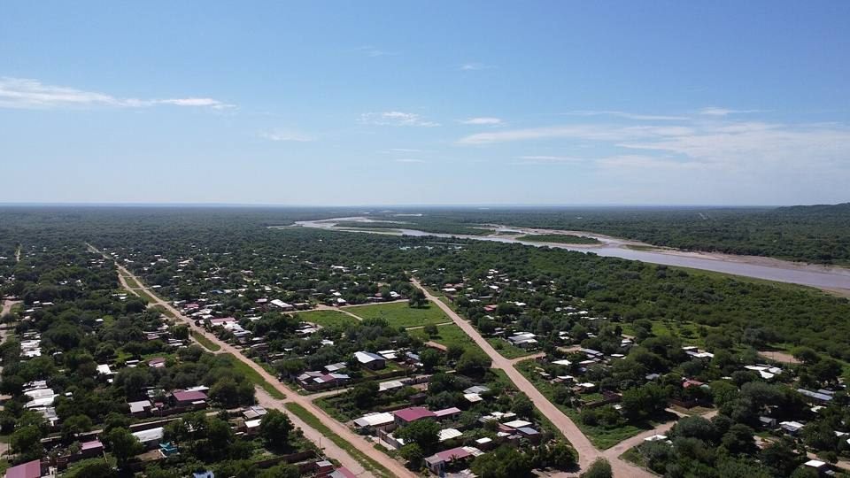
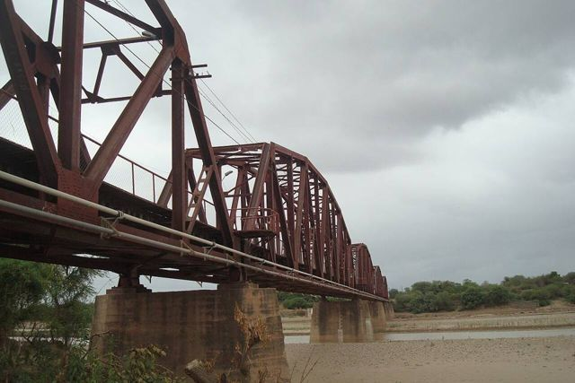
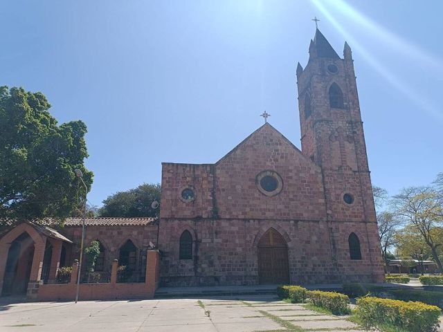
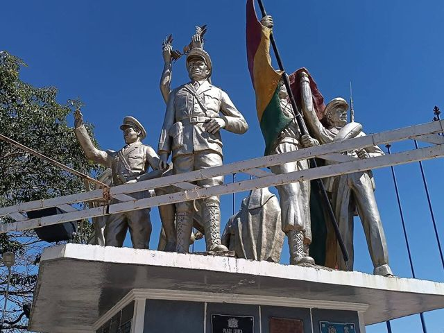
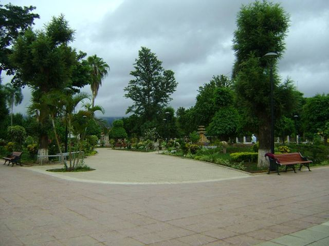

Villamontes (Gran Chaco)
Tarija Department · Nature and hiking

Villamontes is the town of the Bolivian Gran Chaco, a hot region of dry forest, on the great Pilcomayo river. A few kilometres away the river cuts through the mountains in the El Angosto canyon. The region also keeps the memory of the Chaco War with Paraguay. A very different, still little-visited corner of Bolivia.
400 maltitude
1 to 2 daysto spend there
Things to do
- El Angosto canyon on the Pilcomayo
- Hot springs near town
- History of the Chaco War
- Fishing on the Pilcomayo (May to September)
What to eat
- River fishSurubí, pacú or dorado, grilled over a wood fire or fried, with rice, cassava and plantain. Delicious by the water, in the Llanos and the Amazon.
- Beni beefThe Beni is cattle country: big grills (churrasco) and dried meat.
- Tropical fruitMangoes, pineapples, papayas, achachairú (a small tangy fruit) and fresh juices everywhere for a few bolivianos.
Tip. Very hot from October to February. Buses from Tarija or Santa Cruz, about 8 h.
Also here
- Border Cañada Oruro – Infante Rivarola (to Asunción)The Chaco road, via Villamontes. Night buses link Santa Cruz and Asunción in about 20 h. A very hot, sparsely populated region: water and cash are essential.
How to get to Villamontes
Yacuiba Road (bus, car) · 1 h 30
Bus or shared taxi.
Camiri Road (bus, car) · about 3 h
Bus towards Villamontes and Yacuiba.
Tarija Road (bus, car) · 7 to 9 h
Bus from Tarija's terminal.
Mountain road down to the Chaco.
Santa Cruz Road (bus, car) · 7 to 9 h
Night bus from Santa Cruz's Bimodal terminal.
Photos of Villamontes (Gran Chaco)








More places in this region
 TarijaBolivia's Andalusia: high-altitude vineyards, singani and a relaxed vibe.
TarijaBolivia's Andalusia: high-altitude vineyards, singani and a relaxed vibe. Valle de la ConcepciónTarija's wine and singani cellars.
Valle de la ConcepciónTarija's wine and singani cellars. San LorenzoA colonial Chapaco village, home of the hero Moto Méndez, 15 km from Tarija.
San LorenzoA colonial Chapaco village, home of the hero Moto Méndez, 15 km from Tarija. CoimataA river, natural pools and a tall waterfall, 20 minutes from Tarija.
CoimataA river, natural pools and a tall waterfall, 20 minutes from Tarija. San Jacinto lake and TomatitasA lake among the hills and a river for swimming, on Tarija's doorstep.
San Jacinto lake and TomatitasA lake among the hills and a river for swimming, on Tarija's doorstep. Padcaya and ChaguayaA valley village south of Tarija, and the great sanctuary of the Virgin of Chaguaya.
Padcaya and ChaguayaA valley village south of Tarija, and the great sanctuary of the Virgin of Chaguaya. BermejoA tropical border town on the Bermejo river, facing Argentina.
BermejoA tropical border town on the Bermejo river, facing Argentina. Sama reserve: Tajzara lagoonsHigh lagoons, dunes and flamingos in the Sama reserve, above Tarija.
Sama reserve: Tajzara lagoonsHigh lagoons, dunes and flamingos in the Sama reserve, above Tarija. Tariquía reserveCloud forests and wild rivers, for multi-day treks with a guide.
Tariquía reserveCloud forests and wild rivers, for multi-day treks with a guide. Camargo (Cinti valley)Old vineyards and red cliffs in the Cinti valley, between Potosí and Tarija.
Camargo (Cinti valley)Old vineyards and red cliffs in the Cinti valley, between Potosí and Tarija. YacuibaThe Chaco's big border town, facing Argentina.
YacuibaThe Chaco's big border town, facing Argentina. CamiriThe Chaco's "oil capital", among hills and Guaraní culture.
CamiriThe Chaco's "oil capital", among hills and Guaraní culture.